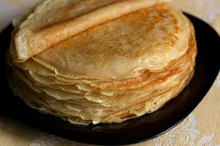
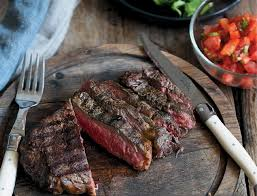

Тыквенный суп
Нежный крем-суп для осеннего вечера.
Читать далее
Нежный крем-суп для осеннего вечера.
Читать далее
Тонкие и ажурные блины по рецепту.
Читать далее
Секреты идеальной прожарки мяса.
Читать далее